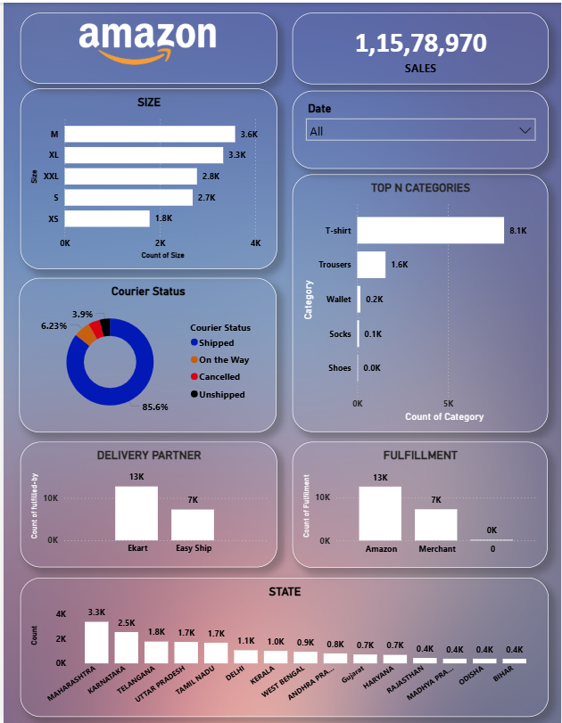

Amazon Sales Dashboard
An analytical project using Excel & Power BI to track product performance, courier status, and fulfillment efficiency for an e-commerce platform.
Problem Statement
In high-volume e-commerce platforms like Amazon, millions of transactions occur annually. Without centralized analytics, tracking product demand, courier reliability, and fulfillment efficiency across regions becomes difficult. This lack of visibility can hinder operational efficiency and slow down strategic decision-making.
Solution Approach
- Collected raw sales data including category, size, courier status, delivery partner, fulfillment source, and state-wise breakdown.
- Cleaned and validated the dataset in Excel for accuracy and consistency.
- Created an interactive Power BI dashboard to visualize:
- Top-selling product categories and sizes
- Courier status breakdown (Shipped, On the Way, Cancelled, Unshipped)
- Delivery partner performance
- Fulfillment source distribution
- State-wise sales distribution
- Applied date filter to allow daily trend analysis.
- Designed with a custom gradient theme while integrating Amazon’s logo for brand association.
Dashboard Preview

*This dashboard consolidates Amazon’s sales performance into a single view, highlighting key operational and market trends to guide decision-making.*
Key Insights Discovered (from Dashboard)
- Category Leader: T-shirts dominate with 8.1K units sold.
- Top Sizes: M (3.6K), XL (3.3K), XXL (2.8K) are most in demand.
- Courier Status: 85.6% shipped, 6.23% cancelled, 3.9% on the way, remaining unshipped.
- Delivery Partners: Ekart fulfilled 13K orders, outperforming Easy Ship’s 7K.
- Fulfillment: Amazon-managed fulfillment handled 13K orders vs Merchant’s 7K.
- Regional Hotspots: Maharashtra (3.3K sales), Kerala (2.5K), and Telangana (1.8K) are top-performing states.
Result / Impact
- Operational Efficiency: Identified most reliable delivery partners and fulfillment methods for scaling.
- Inventory Planning: Focused restocking on high-demand categories and sizes.
- Regional Strategy: Enabled targeted marketing campaigns in high-performing states.
- Customer Experience: Courier tracking insights help reduce cancellations and improve delivery speed.